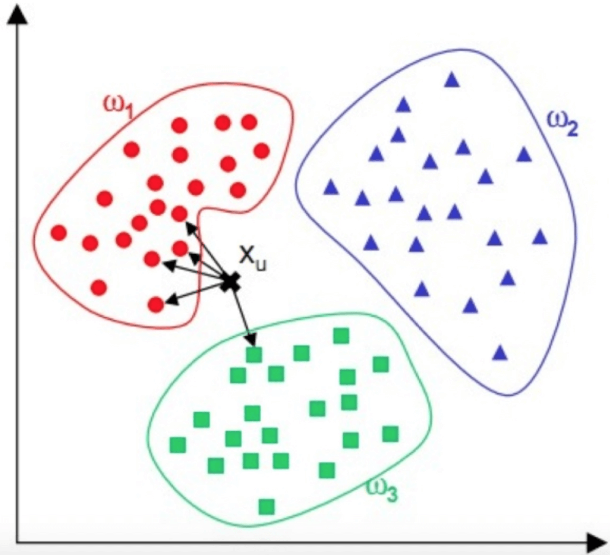
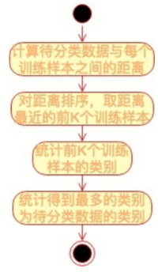
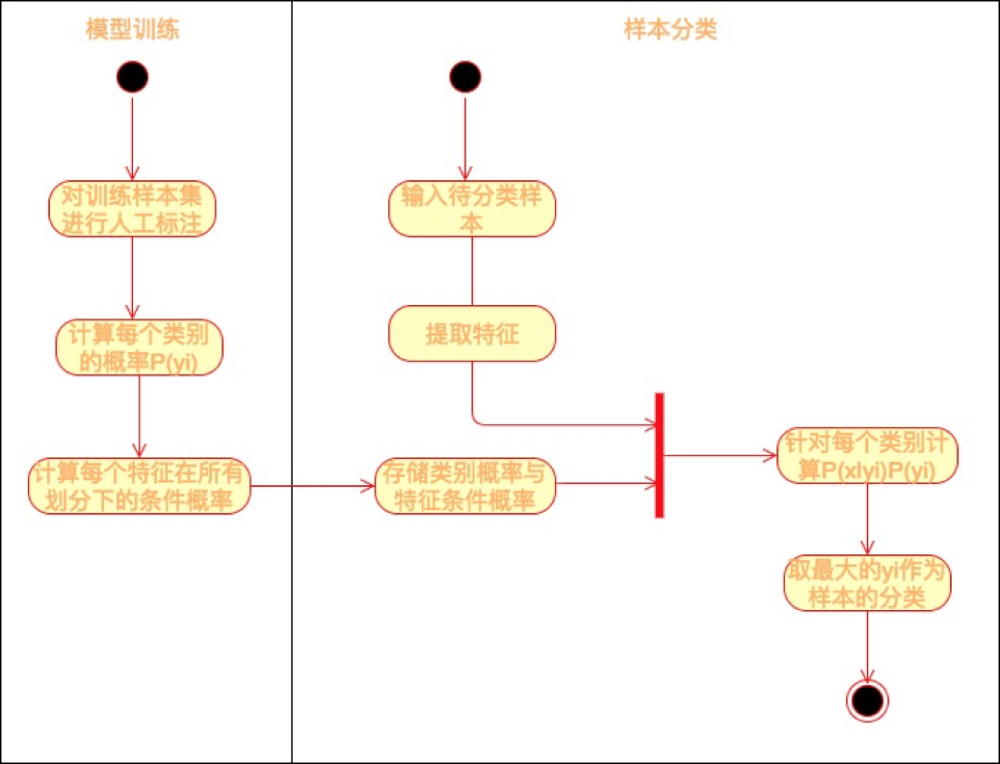

- 00 开篇词 为什么说每个软件工程师都应该懂大数据技术？.md.html
- 01 大数据技术发展史：大数据的前世今生.md.html
- 02 大数据应用发展史：从搜索引擎到人工智能.md.html
- 03 大数据应用领域：数据驱动一切.md.html
- 04 移动计算比移动数据更划算.md.html
- 05 从RAID看垂直伸缩到水平伸缩的演化.md.html
- 06 新技术层出不穷，HDFS依然是存储的王者.md.html
- 07 为什么说MapReduce既是编程模型又是计算框架？.md.html
- 08 MapReduce如何让数据完成一次旅行？.md.html
- 09 为什么我们管Yarn叫作资源调度框架？.md.html
- 10 模块答疑：我们能从Hadoop学到什么？.md.html
- 11 Hive是如何让MapReduce实现SQL操作的？.md.html
- 12 我们并没有觉得MapReduce速度慢，直到Spark出现.md.html
- 13 同样的本质，为何Spark可以更高效？.md.html
- 14 BigTable的开源实现：HBase.md.html
- 15 流式计算的代表：Storm、Flink、Spark Streaming.md.html
- 16 ZooKeeper是如何保证数据一致性的？.md.html
- 17 模块答疑：这么多技术，到底都能用在什么场景里？.md.html
- 18 如何自己开发一个大数据SQL引擎？.md.html
- 19 Spark的性能优化案例分析（上）.md.html
- 20 Spark的性能优化案例分析（下）.md.html
- 21 从阿里内部产品看海量数据处理系统的设计（上）：Doris的立项.md.html
- 22 从阿里内部产品看海量数据处理系统的设计（下）：架构与创新.md.html
- 23 大数据基准测试可以带来什么好处？.md.html
- 24 从大数据性能测试工具Dew看如何快速开发大数据系统.md.html
- 25 模块答疑：我能从大厂的大数据开发实践中学到什么？.md.html
- 26 互联网产品 + 大数据产品 = 大数据平台.md.html
- 27 大数据从哪里来？.md.html
- 28 知名大厂如何搭建大数据平台？.md.html
- 29 盘点可供中小企业参考的商业大数据平台.md.html
- 30 当大数据遇上物联网.md.html
- 31 模块答疑：为什么大数据平台至关重要？.md.html
- 32 互联网运营数据指标与可视化监控.md.html
- 33 一个电商网站订单下降的数据分析案例.md.html
- 34 A_B测试与灰度发布必知必会.md.html
- 35 如何利用大数据成为“增长黑客”？.md.html
- 36 模块答疑：为什么说数据驱动运营？.md.html
- 37 如何对数据进行分类和预测？.md.html
- 38 如何发掘数据之间的关系？.md.html
- 39 如何预测用户的喜好？.md.html
- 40 机器学习的数学原理是什么？.md.html
- 41 从感知机到神经网络算法.md.html
- 42 模块答疑：软件工程师如何进入人工智能领域？.md.html
- 所有的不确定都是机会——智慧写给你的新年寄语.md.html
- 第2季回归丨大数据之后，让我们回归后端.md.html
- 结束语 未来的你，有无限可能.md.html
- 捐赠
37 如何对数据进行分类和预测？
今天我们进入专栏的最后一个模块，补全大数据知识体系最后一块拼图，一起来学习大数据算法。大数据越来越多的和人工智能关联起来，所谓人工智能就是利用数学统计方法，统计数据中的规律，然后利用这些统计规律进行自动化数据处理，使计算机表现出某种智能的特性，而各种数学统计方法，就是大数据算法。关于专栏算法模块的设置，我会围绕数据分类、数据挖掘、推荐引擎、大数据算法的数学原理、神经网络算法几个方面，为你展开大数据算法的“全景图”。
分类是人们认知事物的重要手段，如果你能将某个事物分类得足够细，你实际上就已经认知了这个事物。如果你能将一个人从各个维度，比如专业能力、人际交往、道德品行、外貌特点各个方面都进行正确的分类，并且在每个维度的基础上还能再细分，比如大数据专业能力、Java编程能力、算法能力也能正确分类，那么可以说你已经完全了解这个人了。
现实中，几乎没有人能够完全将另一个人分类。也就是说，几乎没有人能完全了解另一个人。但是在互联网时代，一个人在互联网里留下越来越多的信息，如果计算机利用大数据技术将所有这些信息都统一起来进行分析，理论上可以将一个人完全分类，也就是完全了解一个人。
分类也是大数据常见的应用场景之一，通过对历史数据规律的统计，将大量数据进行分类然后发现数据之间的关系，这样当有新的数据进来时，计算机就可以利用这个关系自动进行分类了。更进一步讲，如果这个分类结果在将来才会被证实，比如一场比赛的胜负、一次选举的结果，那么在旁观者看来，就是在利用大数据进行预测了。其实，现在火热的机器学习本质上说就是统计学习。
下面我通过一个相对比较简单的KNN分类算法，向你展示大数据分类算法的特点和应用，以及各种大数据算法都会用到的数据距离计算方法和特征值处理方法。
KNN分类算法
KNN算法，即K近邻（K Nearest Neighbour）算法，是一种基本的分类算法。其主要原理是：对于一个需要分类的数据，将其和一组已经分类标注好的样本集合进行比较，得到距离最近的K个样本，K个样本最多归属的类别，就是这个需要分类数据的类别。下面我给你画了一个KNN算法的原理图。

图中，红蓝绿三种颜色的点为样本数据，分属三种类别\(w\_{1}\)、\(w\_{2}\)、 \(w\_{3}\) 。对于待分类点\(X\_{u}\) ，计算和它距离最近的5个点（即K为5），这5个点最多归属的类别为\(w\_{1}\)（4个点归属\(w\_{1}\)，1个点归属\(w\_{3}\)），那么\(X\_{u}\)的类别被分类为\(w\_{1}\)。
KNN的算法流程也非常简单，请看下面的流程图。

KNN算法是一种非常简单实用的分类算法，可用于各种分类的场景，比如新闻分类、商品分类等，甚至可用于简单的文字识别。对于新闻分类，可以提前对若干新闻进行人工标注，标好新闻类别，计算好特征向量。对于一篇未分类的新闻，计算其特征向量后，跟所有已标注新闻进行距离计算，然后进一步利用KNN算法进行自动分类。
读到这你肯定会问，如何计算数据的距离呢？如何获得新闻的特征向量呢？
数据的距离
KNN算法的关键是要比较需要分类的数据与样本数据之间的距离，这在机器学习中通常的做法是：提取数据的特征值，根据特征值组成一个n维实数向量空间（这个空间也被称作特征空间），然后计算向量之间的空间距离。空间之间的距离计算方法有很多种，常用的有欧氏距离、余弦距离等。
对于数据\(x\_{i}\)和\(x\_{j}\)，若其特征空间为n维实数向量空间\(R^{n}\)，即\(x\_{i}=(x\_{i1},x\_{i2},…,x\_{in})\)，\(x\_{j}=(x\_{j1},x\_{j2},…,x\_{jn})\)，则其欧氏距离计算公式为
\[d(x\_{i},x\_{j})=\\sqrt{\\sum\_{k=1}^{n}{(x\_{ik}-x\_{jk})^2}}\]
这个欧式距离公式其实我们在初中的时候就学过，平面几何和立体几何里两个点之间的距离，也是用这个公式计算出来的，只是平面几何（二维几何）里的n=2，立体几何（三维几何）里的n=3，而机器学习需要面对的每个数据都可能有n维的维度，即每个数据有n个特征值。但是不管特征值n是多少，两个数据之间的空间距离的计算公式还是这个欧氏计算公式。大多数机器学习算法都需要计算数据之间的距离，因此掌握数据的距离计算公式是掌握机器学习算法的基础。
欧氏距离是最常用的数据计算公式，但是在文本数据以及用户评价数据的机器学习中，更常用的距离计算方法是余弦相似度。
\[cos(\\theta)=\\frac{\\sum\_{k=1}^{n}{x\_{ik}x\_{jk}}}{\\sqrt{\\sum\_{k=1}^{n}{x\_{ik}^{2}}}\\sqrt{\\sum\_{k=1}^{n}{x\_{jk}^{2}}}}\]
余弦相似度的值越接近1表示其越相似，越接近0表示其差异越大，使用余弦相似度可以消除数据的某些冗余信息，某些情况下更贴近数据的本质。我举个简单的例子，比如两篇文章的特征值都是：“大数据”“机器学习”和“极客时间”，A文章的特征向量为（3, 3, 3），即这三个词出现次数都是3；B文章的特征向量为（6, 6, 6），即这三个词出现次数都是6。如果光看特征向量，这两个向量差别很大，如果用欧氏距离计算确实也很大，但是这两篇文章其实非常相似，只是篇幅不同而已，它们的余弦相似度为1，表示非常相似。
余弦相似度其实是计算向量的夹角，而欧氏距离公式是计算空间距离。余弦相似度更关注数据的相似性，比如两个用户给两件商品的打分分别是（3, 3）和（4, 4），那么两个用户对两件商品的喜好是相似的，这种情况下，余弦相似度比欧氏距离更合理。
文本的特征值
我们知道了机器学习的算法需要计算距离，而计算距离还需要知道数据的特征向量，因此提取数据的特征向量是机器学习工程师们的重要工作，有时候甚至是最重要的工作。不同的数据以及不同的应用场景需要提取不同的特征值，我们以比较常见的文本数据为例，看看如何提取文本特征向量。
文本数据的特征值就是提取文本关键词，TF-IDF算法是比较常用且直观的一种文本关键词提取算法。这种算法是由TF和IDF两部分构成。
TF是词频（Term Frequency），表示某个单词在文档中出现的频率，一个单词在一个文档中出现得越频繁，TF值越高。
词频： $\( TF=\\frac{某个词在文档中出现的次数}{文档总词数}\)$
IDF是逆文档频率（Inverse Document Frequency），表示这个单词在所有文档中的稀缺程度，越少文档出现这个词，IDF值越高。
逆文档频率：$\(IDF=log(\\frac{所有的文档总数}{出现该词的文档数})\)$
TF与IDF的乘积就是TF-IDF。
\[TF-IDF=TF\\times IDF\]
所以如果一个词在某一个文档中频繁出现，但在所有文档中却很少出现，那么这个词很可能就是这个文档的关键词。比如一篇关于原子能的技术文章，“核裂变”“放射性”“半衰期”等词汇会在这篇文档中频繁出现，即TF很高；但是在所有文档中出现的频率却比较低，即IDF也比较高。因此这几个词的TF-IDF值就会很高，就可能是这篇文档的关键词。如果这是一篇关于中国原子能的文章，也许“中国”这个词也会频繁出现，即TF也很高，但是“中国”也在很多文档中出现，那么IDF就会比较低，最后“中国”这个词的TF-IDF就很低，不会成为这个文档的关键词。
提取出关键词以后，就可以利用关键词的词频构造特征向量，比如上面例子关于原子能的文章，“核裂变”“放射性”“半衰期”这三个词是特征值，分别出现次数为12、9、4。那么这篇文章的特征向量就是（12, 9, 4），再利用前面提到的空间距离计算公式计算与其他文档的距离，结合KNN算法就可以实现文档的自动分类。
贝叶斯分类
贝叶斯公式是一种基于条件概率的分类算法，如果我们已经知道A和B的发生概率，并且知道了B发生情况下A发生的概率，可以用贝叶斯公式计算A发生的情况下B发生的概率。事实上，我们可以根据A的情况，即输入数据，判断B的概率，即B的可能性，进而进行分类。
举个例子：假设一所学校里男生占60%，女生占40%。男生总是穿长裤，女生则一半穿长裤一半穿裙子。假设你走在校园中，迎面走来一个穿长裤的学生，你能够推断出这个穿长裤学生是男生的概率是多少吗？
答案是75%，具体算法是：
\[穿长裤是男生的概率 = \\frac{男生穿长裤的概率 \\times 是男生的概率}{学生穿长裤的概率}\]
这个算法就利用了贝叶斯公式，贝叶斯公式的写法是：
\[P(B|A)= \\frac{P(A|B)\*P(B)}{P(A)}\]
意思是A发生的条件下B发生的概率，等于B发生的条件下A发生的概率，乘以B发生的概率，除以A发生的概率。还是上面这个例子，如果我问你迎面走来穿裙子的学生是女生的概率是多少。同样带入贝叶斯公式，可以计算出是女生的概率为100%。其实这个结果我们根据常识也能推断出来，但是很多时候，常识受各种因素的干扰，会出现偏差。比如有人看到一篇博士生给初中学历老板打工的新闻，就感叹读书无用。事实上，只是少见多怪，样本量太少而已。而大量数据的统计规律则能准确反映事物的分类概率。
贝叶斯分类的一个典型的应用场合是垃圾邮件分类，通过对样本邮件的统计，我们知道每个词在邮件中出现的概率\(P(A\_{i})\)，我们也知道正常邮件概率\(P(B\_{0})\)和垃圾邮件的概率\(P(B\_{1})\)，还可以统计出垃圾邮件中各个词的出现概率\(P(A\_{i}|B\_{1})\)，那么现在一封新邮件到来，我们就可以根据邮件中出现的词，计算\(P(B\_{1}|A\_{i})\)，即得到这些词出现情况下，邮件为垃圾邮件的概率，进而判断邮件是否为垃圾邮件。
现实中，贝叶斯公式等号右边的概率，我们可以通过对大数据的统计获得，当有新的数据到来的时候，我们就可以带入上面的贝叶斯公式计算其概率。而如果我们设定概率超过某个值就认为其会发生，那么我们就对这个数据进行了分类和预测，具体过程如下图所示。

训练样本就是我们的原始数据，有时候原始数据并不包含我们想要计算的维度数据，比如我们想用贝叶斯公式自动分类垃圾邮件，那么首先要对原始邮件进行标注，需要标注哪些邮件是正常邮件、哪些邮件是垃圾邮件。这一类需要对数据进行标注才能进行的机器学习训练也叫作有监督的机器学习。
小结
分类是机器学习非常重要的一类算法，很多场景都需要用到分类，很多AI其实都是分类算法在起作用。比如AI围棋算法AlphaGo本质就是一个分类算法，围棋棋盘有361个交叉点，可以认为有361个分类选项，AlphaGo只要每次选择一个有最大赢面的分类选项输出即可，具体我们在神经网络一期再来讨论。
思考题
KNN算法的简单实现只需要几十行代码，请用你熟悉的编程语言实现KNN。
欢迎你点击“请朋友读”，把今天的文章分享给好友。也欢迎你写下自己的思考或疑问，与我和其他同学一起讨论。
© 2019 - 2023 Liangliang Lee. Powered by gin and hexo-theme-book.